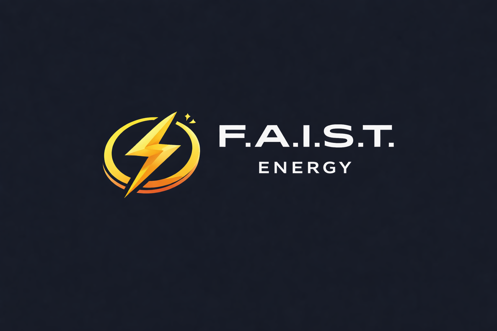

Zaměřujeme se na chytré řízení, monitoring a optimalizaci energetických systémů. Pracujeme s daty, reálným provozem a dlouhodobou udržitelností řešení.
Sběr a analýza dat o spotřebě energií v reálném čase.
Hledání úspor a efektivního řízení na základě dat a chování systému.
Propojení různých zdrojů energie do jednoho přehledného celku.
Návrh řešení s ohledem na budoucí rozšiřování a změny.
Energetiku nevnímáme izolovaně. Je součástí širšího systému – technického, ekonomického i provozního. Proto pracujeme s daty, kontextem a reálnými scénáři, nikoliv s obecnými sliby.